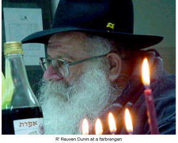

The Cucumbers Rose Up and Hit the Gardener
In the Hebrew Wikipedia, the title is explained as an idiom which means when a young student tries to teach his learned and experienced teacher. Sometimes the student turns out to be a fool who would be better off listening to his elders, but sometimes the young student actually comes up with good ideas. How does this tie in with the hisgalus of Chassidus and the avoda of shlichus? Read on…
THE DONKEY IN THREE ERAS

Rashi is alluding here to three different eras in which the Jewish people can have mastery over the materiality (from the same Hebrew root as donkey) of the world. In the era of Avrohom, before the giving of the Torah, it was only possible to “saddle the donkey,” to subdue materiality so it would not interfere with the service of Hashem. In the era of Moshe, Mattan Torah, it was possible to have his wife and children ride the donkey, i.e. to use materiality in the service of Hashem. In the era of Geula, materiality will be refined to the extent that Moshiach himself will achieve greatness and progress by way of the material, “and riding on a donkey.”
If we take this idea and apply it to shlichus, we can say that nowadays, in the final moments of galus where Moshiach’s activities in the world are already apparent, we can see that even the “donkey” (and each person can interpret for himself, according to the stories that follow, who and what is a “donkey”) is ready for the Geula and helps complete the only remaining avoda of shlichus and hasten the Geula.
We just need to ensure that the donkey knows that it is a donkey and will not try to dictate to us so it won’t be a case of “the cucumbers rose up and hit the gardener.”
WHEN R’ REUVEN TAUGHT
R’ Reuven Dunin a”h once went to farbreng with the bachurim in the Chabad yeshiva in Lud. Between the discussions, the bachurim sang sweet Chassidishe niggunim. One of the young bachurim thought he would decide when the niggun should end, in his desire to hear more from the mashpia.
At a certain point, the young bachur emitted a long sssshhhhhhhh. Unfortunately for him, R’ Dunin noticed him doing this and did not like it at all. The young bachur had the privilege of R’ Dunin dedicating a personal story to him.
“One time there was a young bachur who went to yeshiva to learn. The bachur learned diligently, and did not eat or sleep much so he could spend more time learning. He eventually became sick as a result. The doctor urgently recommended that the bachur spend a week or two in the country air.
“So the bachur went to a farm belonging to some uncle somewhere in the mountains. The goodhearted uncle welcomed the bachur and showed him around the farm. ‘Here are the horses,’ pointed the uncle, ‘and here are the cows.’ ‘Here are the chickens and there are the fields.’
“The uncle and the bachur came across a newborn foal born just a week earlier. ‘What is that?’ asked the bachur curiously. ‘That’s a foal, a young donkey.’ The yeshiva bachur, for whom this was the first time he was seeing such a young donkey, was in shock.
“‘What are you marveling at?’ wondered the uncle.
“‘I am marveling at how he is so small but he is already a donkey.’”
R’ Dunin caressed the shoulder of the bachur who had shushed the others and said, “You are still young. Don’t be a donkey already now.”
In other words, let the people who ought to run things, do what they are supposed to do.
THE CONTRAST BETWEEN CHASSIDUS AND MUSAR
In the Igros Kodesh of the Rebbe Rayatz he brings the story of the Chassid of the Tzemach Tzedek who reviewed a deep maamer of the Rebbe in shul on the topic of “chesed of chesed.” All present were impressed by the Chassidic explanation.
In the shul there was an old Litvak who dismissed the excitement over the Chassidic explanation. He gave his own explanation of “chesed of chesed” which went like this: When you give a torn shoe to a poor man, that’s a chesed. When you also give him a nail to fix the shoe, that is chesed of chesed.
I spent Shabbos Parshas VaYigash in Bayit Vegan in Yerushalayim. Before Shacharis a few of us Chassidim sat together and learned the maamer “VaYigash Eilav Yehuda” from Torah Ohr. R’ Yaakov Friedman, a Lubavitcher in Bayit Vegan, read and explained the maamer, chapter after chapter, until a clear picture emerged:
Yosef represents increase and growth and Yehuda represents bittul. During galus, Yosef plays the primary role and he is the leader. In the time of Geula however, Moshiach will be from Yehuda. Based on this, at the end of the maamer the Alter Rebbe explains a story in the Gemara that Hashem told Yerovam ben Nevat (from the tribe of Yosef) to do t’shuva and “I and you and Ben Yishai will stroll together in Gan Eden.” Yerovam asked, “Who will lead?” Hashem said, “Ben Yishai will lead.” Yerovam said, “in that case, I’m not interested.”
The Alter Rebbe explains Yerovam’s refusal based on the same idea, that Yerovam wanted Yosef to be the leader in the future too and Hashem told him that’s impossible, “for Dovid My servant will be their Nasi forever.”
A Litvishe yeshiva bachur joined us and he felt a moral obligation to give a different explanation to the discussion between Yerovam and Hashem. As much as we tried to convince him to listen to the Chassidic explanation, he insisted on saying the explanation that he knew from the Mirrer Rosh Yeshiva, R’ Chaim Shmuelevitz. In a simple analysis of the two explanations, one can see the difference between the Musar and the Chassidic approach.
R’ Chaim said, why did Yerovam ask who will lead when Hashem already told him, “I and you and Ben Yishai?” Hashem had already told him that he will go ahead of Ben Yishai!
R’ Chaim answered, Yerovam heard that he would be first (after Hashem) but he so liked hearing that that he wanted to hear it again explicitly, from Hashem. That’s how far one can go with the midda of pride.
There, in Bayit Vegan, with the Chassidic maamer on one side and the musar explanation on the other side, I understood the meaning of “and the young students rose up and tried to teach the experienced teacher.”
WHAT A YOUNG BOY CAN ACCOMPLISH
In Nes Tziyona there is a small keilim mikva at the entrance to the Chabad house shul. The shliach, R’ Sagi Har Shefer, realized years ago that there was a need for a mikva like this and he had a professional build it as a public service. Nearly all the hardware stores know about this mikva and they tell their customers about it, so that many people benefit from the service and are grateful to the Chabad house.
One week, a woman came laden with items to toivel and it was apparent that this was the first time she ever did anything like this. She asked the people in the Chabad house how to do it and whether there is a prayer to be said. R’ Menachem Feldman, the Shliach Torah in the city, gave her all the information she needed.
As soon as he introduced himself, she exclaimed, “What? You’re HaRav Menachem? It’s thanks to you that I came here.”
R’ Feldman, a bit surprised, asked, “Where did we meet?”
The woman said that her thirteen year old son sometimes attended R’ Feldman’s class that he gave at the public school.
Among the dozens of classes that R’ Feldman gives, there is a weekly class that takes place in an elementary school. Before every Rosh Chodesh the topic of the class is about the upcoming month. Her family felt the difference. At first her son began saying a bracha before he ate anything. Then he made sure there were mezuzos up all over the house, that there was a separation between meat and milk, and most recently, he announced that all kitchen items made by a non-Jew had to be immersed in a mikva. He also knew about the mikva at the Chabad house, “And so, it’s thanks to you that I’ve come here with all these things for the mikva.”
A CALF WITH FIVE EARS
R’ Noam Bar Tov is the shliach and rabbi of Moshav Balfouriya in the Jezreel Valley. Among the classes he gives, he learns with a veteran moshavnik, a veterinarian and an expert on raising cows and calves. They learn three chapters of Rambam together every day.
One day they learned in the laws of Pesulei HaMukdashin that any korban with an extra limb like an extra foot or ear was invalid. The professional vet gently pointed out that in raising and treating cows for thirty years he had never seen a cow with an extra ear.
The next day the vet called R’ Bar Tov and told him in great excitement that the day before, after they learned, he was called by one of the nearby kibbutzim to come and help a cow give birth. To his amazement and in incredible hashgacha pratis, he saw a calf emerge that had one ear on the right side and four ears on the left.
R’ Bar Tov asked the vet for permission to publicize the picture of the unusual calf. This made a Kiddush Hashem to show that the Torah is a Toras Emes.
Shmuelevitz. "The Cucumbers Rose Up and Hit the Gardener." Beis Moshiach, no. 909 (December 30, 2013).